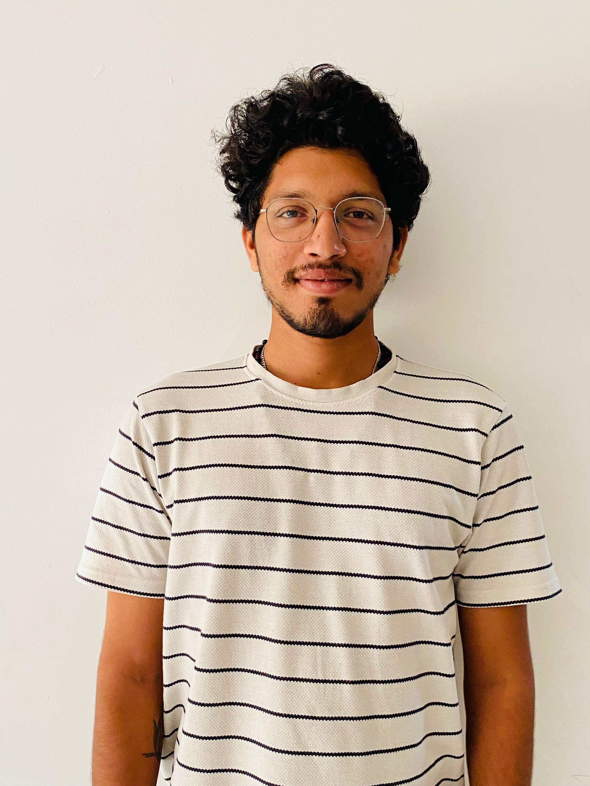

Sandeep Dudvat

CONTACT
ADDRESS
Career objective:
Highly motivated Computer Science Graduate with a strong foundation in Web Development.Pursuing Master of computer applications(MCA) in Computer Science & IT.
Seeking a challenging position to apply and further develop my programming skills.
Education:
- Pursuing MASTER's IN COMPUTER APPLICATIONS(MCA) in Computer sceince & IT at Vignan University .(2014-2016).
- Bachelor of Science in COMPUTER SCIENCE at Aurora's Degree & PG College (Hyderabad) with 66.6%.(2022)
- Intermediate from SriGayatri Educational Institute Hyderabad with 86.6%.(2017)
- Secondary Schooling/High school from Krishnaveni Talent school,Armoor with 6.4% (2015)
Technical Skills:
- Programming Languages: PYTHON
- Web Development: HTML,CSS,JAVASCRIPT
- Packages: MS Office,MS Excel
Courses:
- Learning DevOps Beginners to Advanced with Projects from Udemy
- Learning The Complete 2024 Web Development Bootcamp from Udemy
Soft Skills:
-
Problem Sloving,Communication,Team Work
- Logical Thinking ,Work Ethic,Time Management,Leadship Skills
Hobbies:
- Exploring Coding & Scripting languages
- listening to Darshan Raval